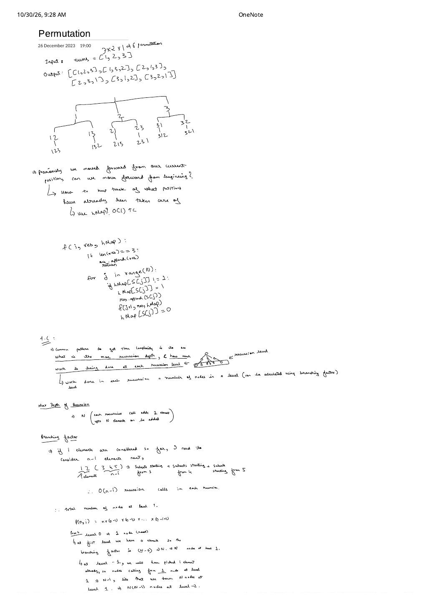
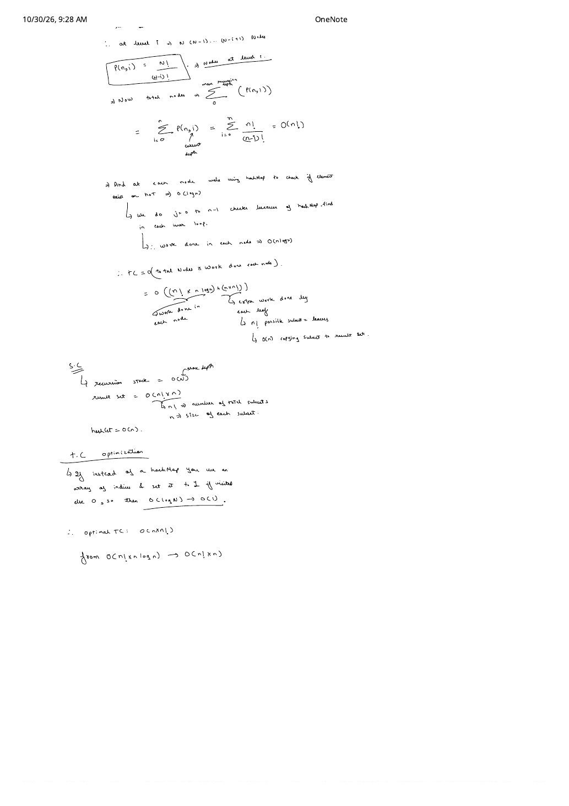

Permutations (LeetCode 46): Falling-Factorial Tree & $O(n \cdot n!)$ Optimization
Expanded from handwritten competitive coding study note: 04_Permutation.pdf
In Subsets (LC 78), once we stepped to index 1 (value 2), we never looked back at index 0 (value 1). In Permutations, ordering matters: [2, 1, 3] requires picking 1 after 2! Across two detailed pages, 04_Permutation.pdf derives both the algorithm—restarting the loop at index 0 with a visited tracker—and a textbook level-by-level complexity proof using the falling factorial $P(n, i) = \frac{n!}{(n - i)!}$.
Problem Statement
LeetCode 46 · Permutations
Given an array nums of distinct integers, return all possible permutations in any order.
Example from note: nums = [1, 2, 3] ($3 \times 2 \times 1 = 6$ permutations) →
[[1, 2, 3], [1, 3, 2], [2, 1, 3], [2, 3, 1], [3, 1, 2], [3, 2, 1]].
Intuition: Restart From Index 0, Track Used Positions
04_Permutation.pdf frames the jump from Subsets to Permutations as two linked questions:
- “Previously we moved forward from our current position; can we move forward from the beginning every time?” → Yes: run
for j in range(N)from0at every depth so earlier elements remain reachable. - “How to keep track of which positions have already been taken care of?” → Maintain a membership tracker (map, visited index array, or in-place suffix partition) and unmark on return so sibling branches can reuse that element!
Exact Recursion-Tree Node Proof (04_Permutation.pdf, Pages 1–2)
Page 1 introduces a general recipe for analyzing any backtracking tree: find the maximum recursion depth, compute the number of nodes at each depth $i$ from the branching factor, multiply by per-node work, and add leaf snapshot work:
- Max recursion depth: $n$ (each recursive call appends 1 element until
res.size() == n). - Branching factor at depth $i$: If $i$ elements have been chosen so far, $n - i$ unpicked elements remain. As drawn in the note on
1 2 (3 4 5)($n = 5, i = 2$), there are $n - i = 3$ outgoing recursive calls (branches starting with3,4, and5). - Nodes at each level:
- Level $0$ (root): $1$ node ($0$ elements picked, branching factor $n - 0 = n$).
- Level $1$: $n$ nodes (each spawns $n - 1$ calls).
- Level $2$: $n(n - 1)$ nodes.
- Level $i$: $P(n, i) = n(n - 1)(n - 2)\cdots(n - i + 1) = \dfrac{n!}{(n - i)!}$ nodes!
Summing Nodes Across All Levels $i = 0 \dots n$
$$\text{Total Nodes} = \sum_{i=0}^{n} P(n, i) = \sum_{i=0}^{n} \frac{n!}{(n - i)!} = n! \sum_{k=0}^{n} \frac{1}{k!} = n!\left(1 + 1 + \frac{1}{2!} + \frac{1}{3!} + \dots + \frac{1}{n!}\right) \le e \cdot n! = \Theta(n!).$$Even summing every internal node in the entire tree adds at most a constant factor $e \approx 2.718$ over the $n!$ leaves!
Progression: Ordered Map → Visited Index Array → In-Place Swap
Page 2 of 04_Permutation.pdf shows how the membership lookup structure directly governs total runtime:
- Ordered Map (
std::map<int, int>, $O(\log n)$ lookup): At each node, the loopj = 0 .. n - 1performs $n$ tree-map lookups $= O(n \log n)$ work per internal node, plus $O(n)$ copy work at each of the $n!$ leaves: $$T_{\text{map}}(n) = O\bigl(n! \cdot n \log n + n \cdot n!\bigr) = O(n! \cdot n \log n).$$ - Index Visited Array (
vis[0 .. n - 1], $O(1)$ lookup — Note's Optimization): Instead of keying by value in a map, index directly into a boolean arrayvis[j]! Lookup drops from $O(\log n) \to O(1)$, per-node loop cost becomes $O(n)$, and total time reaches optimal: $$T_{\text{vis}}(n) = O\bigl(n! \cdot n + n \cdot n!\bigr) = \Theta(n \cdot n!).$$ - In-Place Suffix Swap (Zero extra containers): Partition
numsin-place into locked prefixnums[0 .. idx - 1]and unpicked suffixnums[idx .. n - 1]. Swapnums[idx]with eachnums[j]forj = idx .. n - 1, recurse onidx + 1, and swap back! Now the loop at depth $i$ executes only $n - i$ times instead of $n$ times, and base caseidx == n - 1skips the bottom single-child layer completely.
vis[0..n-1] and visits $1 + 3 + 6 + 6 = 16$ nodes on $n = 3$; Method B swaps in-place and visits only $1 + 3 + 6 = 10$ nodes.Clean C++ & Python Implementations
Watch Out for Two Subtle Details in the Handwritten Pseudocode
In the quick pseudocode sketch on page 1 of04_Permutation.pdf (res.append(S[j]); f(j+1, res, hMap); hMap[S[j]] = 0), remember when coding in C++ or Python:
- Pop
restoo! Whenever you mutate two containers (vis[j] = 1andres.push_back(nums[j])), you must undo both (res.pop_back()andvis[j] = 0)! - Snapshot copy at the leaf: In Python, write
ans.append(res[:])rather thanans.append(res).
#include <cstdint>
#include <utility>
#include <vector>
using namespace std;
// Method A: Index-based visited array (matches page 2 optimization in 04_Permutation.pdf)
class SolutionVisited {
void dfs(const vector<int>& nums, vector<uint8_t>& vis,
vector<int>& res, vector<vector<int>>& ans) {
if (res.size() == nums.size()) {
ans.push_back(res); // O(n) leaf copy across n! leaves
return;
}
for (size_t j = 0; j < nums.size(); ++j) {
if (vis[j]) continue; // O(1) index check instead of O(log n) map.find
vis[j] = 1;
res.push_back(nums[j]);
dfs(nums, vis, res, ans);
res.pop_back(); // undo res
vis[j] = 0; // undo visited flag
}
}
public:
vector<vector<int>> permute(vector<int>& nums) {
vector<vector<int>> ans;
vector<int> res;
res.reserve(nums.size());
vector<uint8_t> vis(nums.size(), 0);
dfs(nums, vis, res, ans);
return ans;
}
};
// Method B: In-place swap (zero extra arrays beyond call stack)
class SolutionSwap {
void dfs(int idx, vector<int>& nums, vector<vector<int>>& ans) {
if (idx == (int)nums.size() - 1) {
ans.push_back(nums);
return;
}
for (int j = idx; j < (int)nums.size(); ++j) {
swap(nums[idx], nums[j]);
dfs(idx + 1, nums, ans);
swap(nums[idx], nums[j]); // restore suffix order!
}
}
public:
vector<vector<int>> permute(vector<int>& nums) {
vector<vector<int>> ans;
dfs(0, nums, ans);
return ans;
}
};Complexity Summary & Duplicate Extension (LC 47)
- Time Complexity: $\Theta(n \cdot n!)$ optimal (down from $O(n! \cdot n \log n)$ with
std::map). - Space Complexity: $O(n)$ recursion stack + $O(n)$ visited array (or $O(1)$ extra in swap version), plus $O(n \cdot n!)$ output result set.
- Follow-Up — Permutations II with Duplicates (LeetCode 47): Sort
numsfirst in Method A and addif (j > 0 && nums[j] == nums[j - 1] && !vis[j - 1]) continue;. Requiring identical elements to be chosen strictly in index order0, 1, 2...prunes all duplicate permutation subtrees!
From the Handwritten Notes
View original handwritten page — 04_Permutation.pdf (Page 1: Tree, pseudocode & P(n, i) branching derivation)


04_Permutation.pdf, page 1: permutation tree on [1, 2, 3], membership tracking pseudocode, and deriving $P(n, i) = n(n - 1)\cdots(n - i + 1)$ nodes at recursion level $i$.View original handwritten page — 04_Permutation.pdf (Page 2: Summation to O(n!) & O(log n) to O(1) array optimization)


04_Permutation.pdf, page 2: summing $\sum_{i=0}^{n} \frac{n!}{(n - i)!} = O(n!)$, separating internal node work from leaf copies, and replacing $O(\log n)$ map lookups with an $O(1)$ index array to reach $O(n \cdot n!)$.